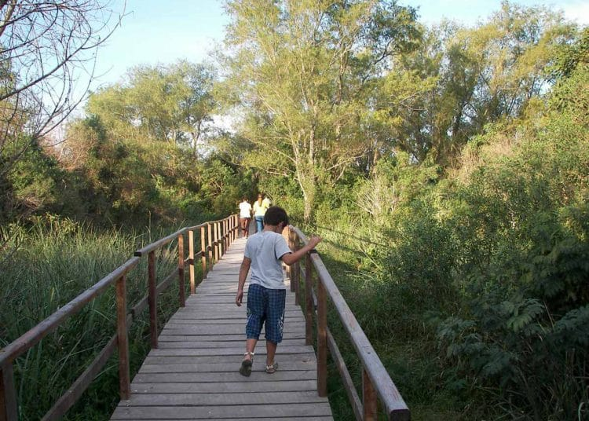

Los Campos del Tuyu, ubicados en la provincia de Buenos Aires, Argentina, son un destino ideal para el senderismo gracias a sus hermosos paisajes y rica biodiversidad. Entre las rutas recomendadas, se encuentra el Sendero de la Costa, que ofrece vistas al mar y la oportunidad de observar aves, y el Sendero del Bosque, que te permite adentrarte en la flora y fauna autóctona. Es importante llevar calzado adecuado, protector solar, repelente de insectos y suficiente agua. Además, consulta el clima antes de salir, ya que puede influir en las condiciones del sendero. Considera la opción de contratar guías locales para conocer más sobre la naturaleza de la zona. También puedes disfrutar de actividades complementarias como la observación de aves, ya que la región alberga diversas especies, y la fotografía de naturaleza, capturando la belleza del entorno. Recuerda siempre respetar la naturaleza siguiendo las normas de Leave No Trace para proteger el ambiente, y asegúrate de informar a alguien sobre tu itinerario y duración prevista de la caminata
La observación de fauna en los Campos del Tuyu es una experiencia fascinante, ya que la región alberga una notable diversidad de especies tanto terrestres como acuáticas. Es un paraíso para los amantes de la ornitología, donde puedes observar aves como flamencos, comunes en las lagunas y humedales, garzas de varias especies en las zonas costeras y diversas aves playeras, como el chorlito y la gaviota. Aunque menos visibles, también puedes encontrar mamíferos como zorrinos, que son activos principalmente durante la noche, cerdos salvajes en algunas áreas y ciervos de los pantanos, que son menos frecuentes pero pueden avistarse en zonas específicas. Además, la región alberga una variedad de reptiles y anfibios, incluyendo serpientes como la yarará, así que es importante mantener la distancia y ser cauteloso, así como ranas y sapos, especialmente en épocas de lluvia. No olvides la gran diversidad de insectos, como mariposas y libélulas, que son fundamentales para el ecosistema y fascinantes de observar.

La fotografía de la naturaleza en los Campos del Tuyu es una actividad gratificante que te permite capturar la belleza de sus paisajes y la diversidad de su fauna. Desde amplias vistas costeras hasta la flora autóctona, hay muchas oportunidades para tomar imágenes impresionantes. Puedes enfocarte en los paisajes, aprovechando las vistas panorámicas del mar, las dunas y los campos. La hora dorada, justo después del amanecer o antes del atardecer, ofrece una luz cálida ideal para capturar la magia del entorno. Las diversas especies de aves, como flamencos y garzas, son perfectas para la fotografía; usar un teleobjetivo te permitirá acercarte sin perturbar su hábitat. Además, las plantas autóctonas y flores silvestres son sujetos fascinantes: intenta capturar detalles y texturas, jugando con la profundidad de campo. Si tienes paciencia, también puedes fotografiar mamíferos y reptiles, pero recuerda mantener la distancia y ser discreto para no asustarlos. Para maximizar tu experiencia, lleva una cámara con buenas capacidades de zoom, un trípode para estabilizar las tomas y filtros polarizadores para mejorar el contraste en las fotos del paisaje.